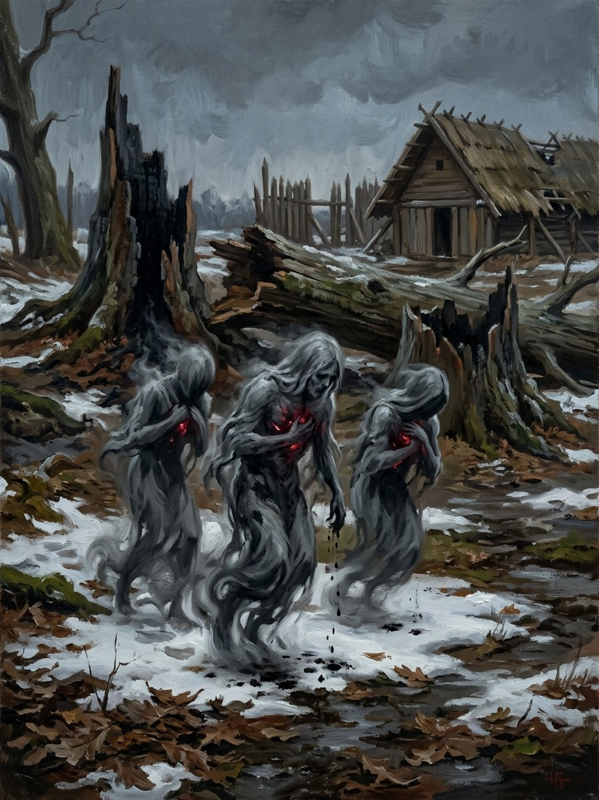

Užgesėlės (the Quenched)¶
Folk source [Historical record]¶
[The saga’s invention.] No folk source; it grows from the Baltic reverence for the sacred hearth-flame and from the historical putting-out of the Šventaragis flame at the baptism of 1387.
Užgesėlės (the Quenched)

Užgesėlės (the Quenched) · creature¶
Tipas |
būtybė |
Status |
Sagos išmonė |
Pastaba |
Bestiary §27. The saga’s invention. Danger III after 1387. |
In the saga (where the folk are half-wrong)¶
Born of killed sacred flames. When the Šventaragis flame was put out in 1387 the fire did not simply stop: its sparks, cut off from Gabija, scattered into Vilnius’s hearths as cold things that remember being fire. Tiny blue sparks like embers that nest in hearths and eat fire, so a house with užgesėlės cannot keep a hearth lit, which in winter is death. They are not malicious; they are trying to become fire again.
Signs & habitat¶
Hearths that go out every night; blue glints in cold ash; children who are always cold. Worst near Vilnius and around every grove-flame put out after 1387.
Before / after the Unbinding¶
They exist only after 1387 and multiply with every flame extinguished (the Samogitian alkai, 1413–17).
Banes, wards, bargains, and their cost¶
Live ash from a still-kept sacred flame, scattered in the hearth, gives them what they want, and they go out content; after 1387 the only kept flame is Vytautas’s secret one at Trakai, and every pinch is a risk to its keeper. Gabija’s own words, „Ugnis tau degs“, spoken by a caster at the hearth, cost exhaustion and soul-chill.
Danger level¶
III dangerous (after 1387).
Story hooks¶
Books II–IV: why the wolves need Vytautas, and he them. Book V ch. 4: the winter of 1430–31 after the flame goes out, when the hearths of Trakai fail one by one.
Ryšiai
Countered by: Paskutinė žarija (Šventaragis ember) (1387–…) — Live ash from a kept flame feeds them; after 1387 the only kept flame is Vytautas’s.
Shard of: Gabija — Sparks of killed sacred flames, cut off from Gabija.
Origin [The saga's invention] born of killed sacred flames: sparks of Šventaragis, cut off from Gabija in 1387
Tier Spark-spirits · shards of Gabija
Danger III dangerous (after 1387)
Habitat Hearths; worst near Vilnius and around every grove-flame put out
Wants To become fire again
Takes Every flame they find. A house with užgesėlės cannot keep its hearth lit, which in winter is death
Signs Hearths that go out every night; blue glints in cold ash; children always cold
Banes Live ash from a still-kept flame; Gabija's own words
Half-wrong truth. No folk belief to correct. They are not malicious: tiny blue sparks that remember being fire and swallow every flame they find.
Multiplying. They exist only after 1387 and multiply with every flame put out (the Samogitian alkai, 1413-17).
Eating fire. They nest in hearths and swallow the flame.
Live ash. Scattered in the hearth, it gives them what they want and they go out content. After 1387 the only kept flame is Vytautas's, and every pinch is a risk to its keeper.
Ugnis tau degs. A caster at the hearth pays exhaustion and soul-chill.
After 1430. No live ash: the hearths of Trakai fail one by one (Book V ch. 4).
Sąsajos¶
graph LR
ember["Paskutinė žarija (Šventaragis ember)"]
gabija["Gabija"]
uzgesiles["Užgesėlės (the Quenched)"]
uzgesiles -->|Shard of| gabija
ember -->|Counters| uzgesiles
style uzgesiles stroke-width:3px